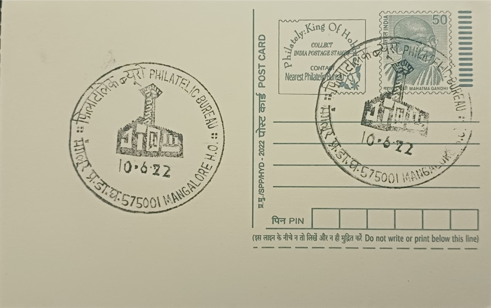

Mangaluru Lighthouse
ಮಂಗಳೂರು ದೀಪಸ್ತಂಭ


The lighthouse at Mangaluru takes its place in a succession of navigational markers erected at the mouth of the Netravati and Gurupura rivers, where the Arabian Sea meets one of the Malabar coast's few natural harbours. Local tradition traces the earliest watch-tower on this stretch of coast to the era of Hyder Ali, the Mysore ruler who recognised the strategic value of the estuary for his navy, with his son Tipu Sultan continuing to use the vantage point. The formal lighthouse station here was established in 1843, reflecting the growing need of British-era maritime administration to mark the harbour entrance safely for merchant shipping plying the Malabar coast.
As one of the DGLL's coastal light stations along Karnataka's shoreline, the Mangaluru lighthouse belongs to a category of maritime infrastructure whose significance is functional rather than religious or dynastic: it exists to guide vessels safely into a harbour that has long underpinned Mangaluru's identity as a trading port. The port handled, and in its modern successor continues to handle, a trade in coffee, cashew, spices, and other produce drawn from the Western Ghats hinterland, giving the lighthouse an economic importance disproportionate to its modest physical scale. Its presence on Light House Hill, overlooking the old harbour, also made it an early civic landmark for the growing town.
The present tower was built in 1903, replacing the earlier nineteenth-century structure, and stands as a round cylindrical masonry tower roughly 11 metres (about 36 feet) tall, finished with a lantern and gallery and painted in black-and-white horizontal bands typical of Indian coastal lighthouses of the period. Its focal plane sits at approximately 10 metres above sea level, modest by the standards of major coastal lights but sufficient for marking the entrance to the older Mangalore harbour, or bunder, used by country craft and smaller vessels rather than the deep-draft cargo ships that now call at New Mangalore Port a short distance up the coast.
A distinctive technical claim attached to the Mangaluru light is that it was among the last lighthouses anywhere to be illuminated using acetylene (AGA) gas cylinders, a nineteenth-century lighting technology that persisted here well after most stations elsewhere had converted to electric lamps. This use of outdated apparatus, continued almost to the end of its operating life, has made the structure a point of interest for lighthouse historians and enthusiasts documenting India's coastal lighting network, distinguishing it from newer automated lights such as the one built at nearby Surathkal in the 1970s to serve the nearby engineering institute's beach.
The historic tower was formally decommissioned and has stood inactive as a working aid to navigation since 2013, its lighting function effectively superseded by newer equipment serving the adjacent New Mangalore Port, which was opened in 1974 and now handles tens of millions of tonnes of cargo annually, including the bulk of the country's coffee, cashew, and spice exports. The tower itself survives on the grounds now occupied by the Mangalore College of Fisheries, overlooking the old harbour it once guided ships into, closed to public entry but still visible as a landmark from the surrounding hillside. Its structure persists less as an active instrument of navigation than as physical evidence of the port city's nineteenth- and twentieth-century maritime administration, kept standing on institutional grounds even after its working life at sea has ended.
| Date of Introduction | September 11, 1989 |
|---|---|
| Address | Incharge, |
| Philatelic Bureau, Mangaluru HO-PB, | |
| Dakshina Kannada (dt.), Karnataka - 575001. |